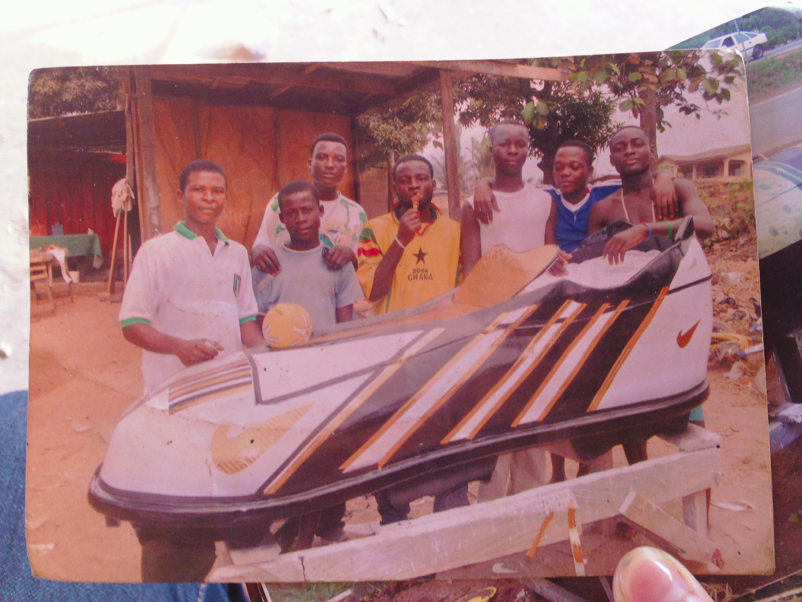
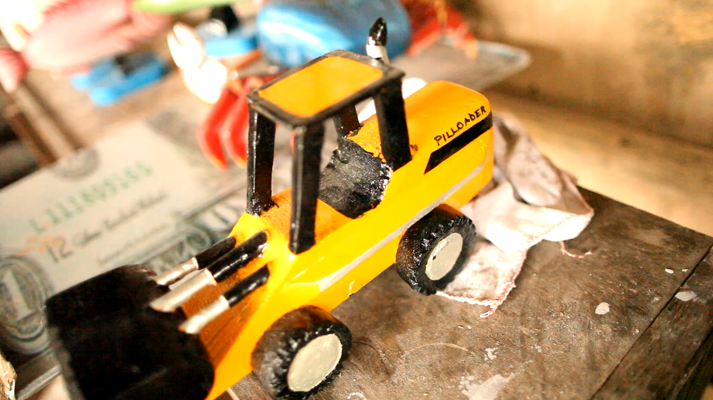
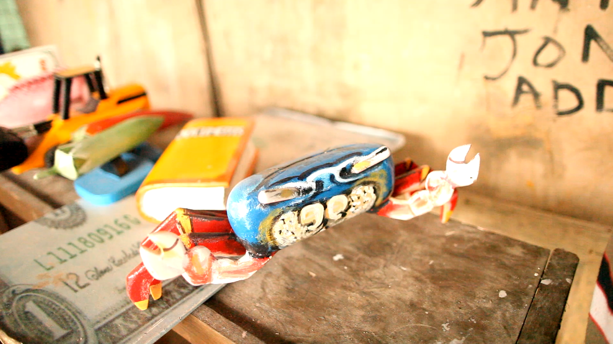

William Tetteh
William is a coffin maker in Pokuase. He builds "fantasy coffins" for families of the deceased. Most of the time, the coffin is in the shape of something that represents the person's profession, though sometimes family symbols are used as well.



We had a conversation with William about his work and how he has seen Ghana changing and then together we decided on shapes for these model coffins. All of the shapes chosen relate to William's thoughts from our conversation. Some of the objects are things that he would like to see leave the country, and some are things that he has special attachments to. Below are his seven works with related excerpts from our conversation.
"You know, rice rice, We have rice farming in Ghana here you know, but they have done it in such a way that our local rice, you go to a place and that is the rice there, nobody will buy it and cook it to eat. They are looking for those imported ones, bagged ones, they say Royal Perfume, and it is the way they advertise it, they say this one will be unique, the aroma, because they will do it in such a way that somebody will sense an aroma when the wife was cooking, and then the aroma was carrying the person, and the person was floating in the air and people will say ahh this, I will buy this one."
"And so everywhere, everywhere the imported goods, even the seeds the farmers are sowing and what we use to buy in town, everything is imported goods. And so nothing in the system we can say we are leaving as our traditional things, it is just those who are into this mere mere farming, these are the people that they usually come with tomatoes and peppers (3:48) and sell it but people who go, and buy these chemicals to produce their farm products and so they will get some quantities but in the end, it will give many sicknesses to Ghanaians. Nowadays the whole system is polluted."
"So many things they started going to do it, and that agreements have come together, nothing can change it, and because of that, there are so many people who have come to this land, and they are causing havoc to Ghanaians especially those who are into this galamsey gold digging. If you go to Obuasi, Takra (?), so many places, the water that they fetch to drink, they have polluted everything with these chemicals. And so because our leadership, the government and the ministers have introduced this into the system, they started to allow them to trade in those area (5:09), they are not even trading in the good area whereby people will be free, but they do it in such a way that it will cause harm, and that has since been when they started allowing them to come in with their ideas so that Ghana will develop and it has been an ethic problem that we have now."
"Like the coffins, they usually go into these family symbols, there are some families in Ghana now who use these crabs, you know the crab, they will use that one as their symbol. But nowadays, some will say no, when somebody dies…when the person is not grown enough to be buried in that kind of coffin, and so there is always problem. Especially when there is controversy in the family of the one who has passed on, the person will make sure you don’t have that haunted (?)…they believe that when you are buried in that, you will be haunted, and so they will over look that, like the crab, and some things like wood that has been cut down from the roots, and so many things, some family symbols, they have ignored. They have ignored the use of all those things now..."
"Well I have done thousands of them, so in particular the one that I always appreciate is fish. Fish. I like to do the fish. The red fish if I design it, I look at it and I say, it looks very unique. The way it tastes (?) I like the fish mostly. Although I do everything exactly and perfectly, but with the fish, I like that one because I was formally a fisherman before I went and learned the trade. And so whenever they come and order the fish, I am happy. I am hilarious about doing it."
"Oh it started when, you know, well the leadership, the nation started going out, and bringing in people to come and trade with Ghanaians, and they bring their ideas that this is what we are into, and so if you do this, this is good. And so they started signing some papers and so many things. …It is not bad to have a trade with people but we have to put everything into consideration before someone comes to introduce something to you, you don’t have to look at the positive side first, but you have to look at the negative aspects as well. But when they hear about the positive side, that is all they think, that that is the end."